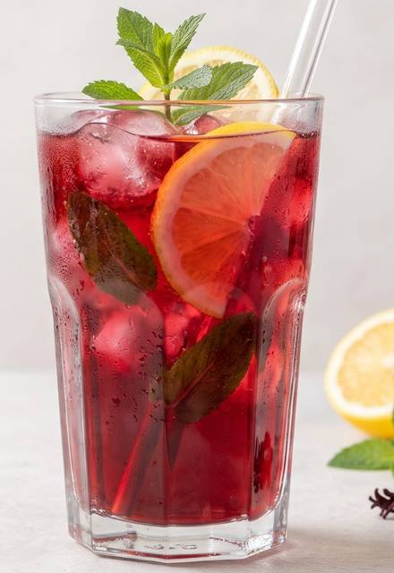

Ohne Zucker
Hibiskus-Eistee
Säuerlich, tiefrot und ganz ohne Zucker. Alkoholfrei, fertig in 5 Minuten.
Zutaten für 1 Glas
- 2 EL getrocknete Hibiskusblüten
- 500 ml kaltes Wasser
- Zitronenscheiben
- Minze
- Eis
So geht’s
- Hibiskus in kaltem Wasser mindestens 4 Stunden im Kühlschrank ziehen lassen.
- Abseihen.
- Auf Eis mit Zitrone und Minze servieren.